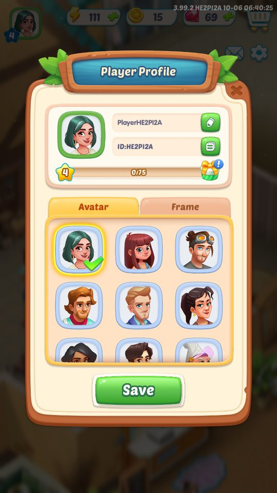
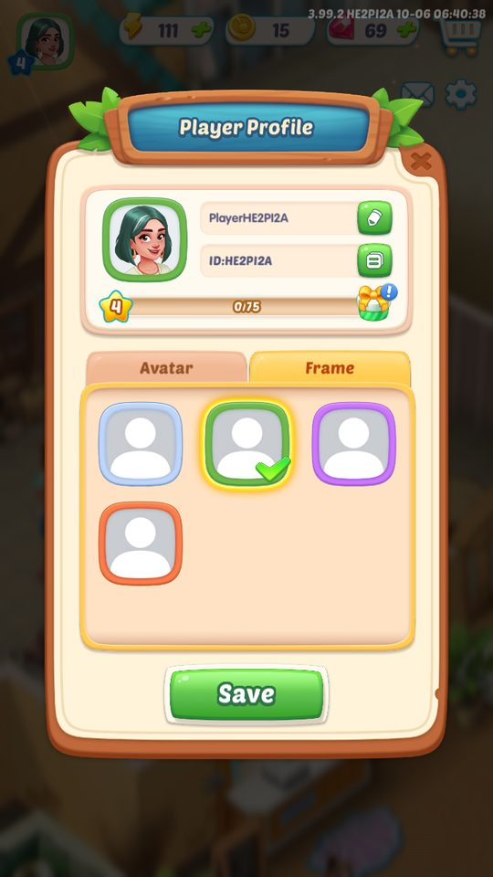
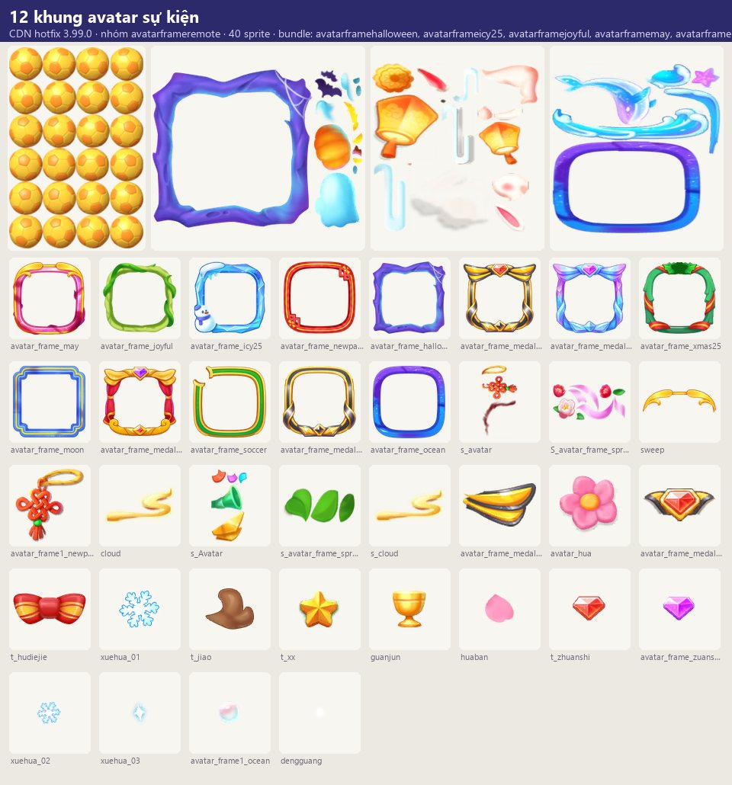
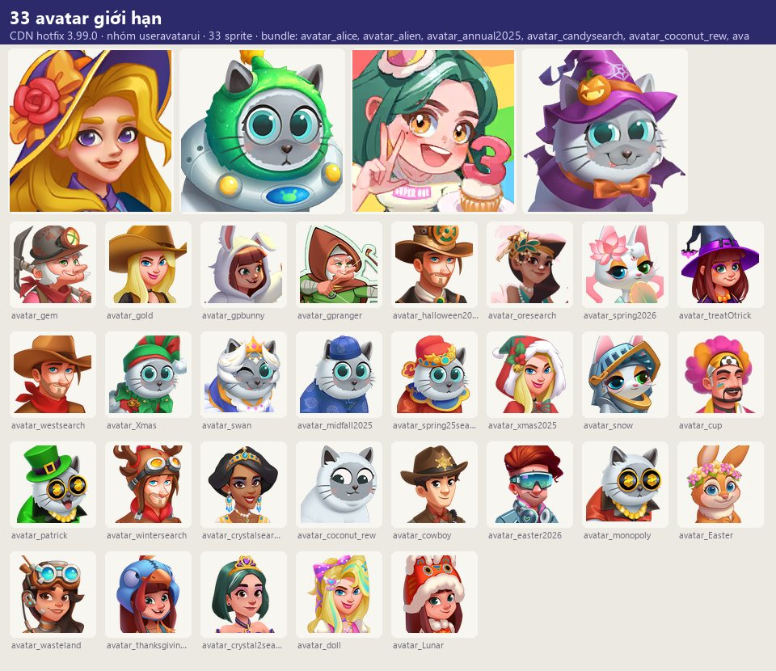

Ảnh chụp & tài nguyên
Người chơi có hồ sơ gồm tên và ảnh đại diện, chỉnh trong Cài đặt.
Mô tả
- Người chơi có hồ sơ gồm tên và ảnh đại diện, chỉnh trong Cài đặt.
- Avatar và khung avatar là phần thưởng thẩm mỹ của sự kiện (khung Halloween, Icy25, Joyful, May, Medal01–03, Moon, Newpage, Ocean, Soccer, Xmas25; khung miễn phí Novicetask) và avatar giới hạn theo dịp (Lucky Coconut).
- Avatar hiển thị ở các bảng xếp hạng/đua và sự kiện nhóm.
- Gói CDN useravatarui chứa 33 bundle ảnh avatar.
Còn thiếu / chưa xác minh
Mở khóa & điểm vào
Tutorial nameandportrait chỉ vào Settings; khung mở khi nhận thưởng sự kiện.
Điểm vào:
- Settings → hồ sơ (SettingUserInfoWindow)
- AvatarSelectWindow
- Popup 'New Avatar Frame unlocked!'
Cách hoạt động
- Tutorial: chạm Settings để xem tên và hồ sơ, đổi ảnh đại diện và tên.
- Khi nhận khung mới: AvatarFrameRewardWindow → 'Use the new Avatar Frame now?' (Yes/Later) → hướng dẫn thử khung và Save.
- Avatar sự kiện (vd.
- Coconut) nhận sau khi vượt toàn bộ màn của sự kiện.
Luồng chi tiết theo code
Tutorial: chạm Settings để xem tên và hồ sơ, đổi ảnh đại diện và tên. Khi nhận khung mới: AvatarFrameRewardWindow → 'Use the new Avatar Frame now?' (Yes/Later) → hướng dẫn thử khung và Save. Avatar sự kiện (vd. Coconut) nhận sau khi vượt toàn bộ màn của sự kiện.
Ảnh chụp & tài nguyên (4)
2 ảnh chụp trong game (BlueStacks/LDPlayer, tài khoản cấp 4); 2 bảng sprite trích từ bundle sự kiện trên CDN hotfix 3.99.0 (mỗi bảng là một chủ đề/biến thể; sprite rời, không phải màn hình đã dựng). Bấm ảnh để phóng to; nhãn UC dẫn tới use case tương ứng.








Use case (3)
Bấm vào từng use case để mở. Mở/đóng tất cả
UC-01 Đổi tên/ảnh
Các bước- Mở SettingUserInfoWindow
- Chọn avatar (AvatarSelectWindow) / nhập tên
- Lưu
| Actor | Player |
|---|---|
| Trigger | Settings |
| Điều kiện | — |
| Kết quả | Hồ sơ cập nhật |
| Quy tắc / số liệu | — |
| Evidence | text tutorial_nameandportrait1..3; prefab SettingUserInfoWindow, AvatarSelectWindow, UserAvatar; log SettingUserInfoWindow×1 |
UC-02 Nhận khung avatar
Các bước- AvatarFrameRewardWindow
- Yes để dùng / Later
- Thử và Save
| Actor | Player |
|---|---|
| Trigger | Phần thưởng sự kiện |
| Điều kiện | — |
| Kết quả | Khung mới |
| Quy tắc / số liệu | — |
| Evidence | text avatar_frame_*; prefab AvatarFrameRewardWindow, AvatarFrame/* |
Cấu hình (4)
Gộp mọi nguồn: const trong code, JSON mặc định trong Resources, bảng static, storage key, AB test, cờ server.
| Nguồn | Key | Kiểu | Giá trị | Ý nghĩa | Nơi định nghĩa |
|---|---|---|---|---|---|
| asset | Khung | list | Halloween, Icy25, Joyful, May, Medal01, Medal02, Medal03, Moon, Newpage, Ocean, Soccer, Xmas25, Novicetask (miễn phí) | UIPrefabConfig AvatarFrame/* | |
| storage key | userProfile | table | — | CSDL SQLCipher | |
| CDN hotfix 3.99.0 (catalog Addressables + bundle) | Biến thể chủ đề — nhóm avatarframeremote | list | 12: Avatarframehalloween, Avatarframeicy25, Avatarframejoyful, Avatarframemay, Avatarframemedal01, Avatarframemedal02, Avatarframemedal03, Avatarframemoon, Avatarframenewpage, Avatarframeocean, Avatarframesoccer, Avatarframexmas25 | Skin/biến thể có bundle trên CDN; server chọn skin nào chạy | facts/runtime/decoded/cdn_themes.json |
| CDN hotfix 3.99.0 (catalog Addressables + bundle) | Biến thể chủ đề — nhóm useravatarui | list | 33: Avatar Alice, Avatar Alien, Avatar Annual2025, Avatar Candy Search, Avatar Coconut Rew, Avatar Cowboy, Avatar Crystal2Search, Avatar Crystal Search, Avatar Cup, Avatar Doll, Avatar Easter, Avatar Easter2026, Avatar Gem, Avatar Gold, Avatar Gpbunny, Avatar Gpranger, Avatar Halloween2025, Avatar Lunar, Avatar Midfall2025, Avatar Monopoly, Avatar Ore Search, Avatar Patrick, Avatar Snow, Avatar Spring2026, Avatar Spring25Search, Avatar Swan, Avatar Thanksgiving2025, Avatar Treatotrick, Avatar Wasteland, Avatar West Search, Avatar Winter Search, Avatar Xmas, Avatar Xmas2025 | Skin/biến thể có bundle trên CDN; server chọn skin nào chạy | facts/runtime/decoded/cdn_themes.json |
Giao diện (UI)
| Element | Class | Mục đích |
|---|---|---|
| Hồ sơ | SettingUserInfoWindow | |
| Chọn avatar | AvatarSelectWindow |
Storage keys
userProfile
Chưa đọc được / ghi chú
- Danh sách avatar (bundle useravatarui 33) và điều kiện nhận khung do server
Tính năng liên quan
Cài đặt, hỗ trợ & khảo sát Sự kiện đua & xếp hạng Sự kiện hợp tác & mời bạn
Nguồn đã đọc
- notes/packs/ProfileAvatar.md
- facts/runtime/cdn_png/index.json + screens/cdn_shots.json (bundle sự kiện CDN)